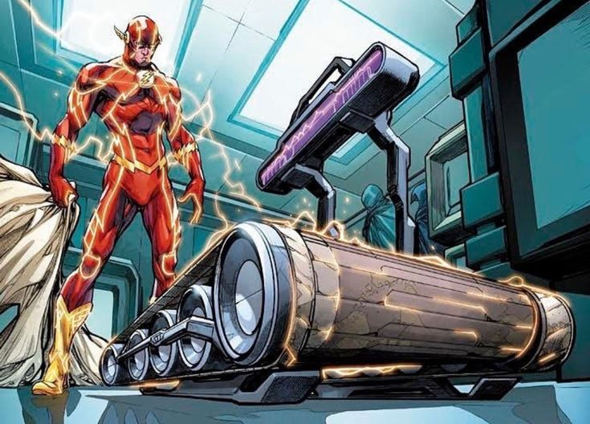

Flash creó el multiverso
En *Flash of Two Worlds* (1961), Barry Allen, el segundo Flash, descubre que puede vibrar tan rápido que accede a una dimensión paralela. Allí conoce a Jay Garrick, el Flash original de los años 40. Este cómic no solo fue una celebración del legado de DC, sino que introdujo por primera vez el concepto de un “multiverso” en los cómics.
El impacto de esta historia fue enorme. Permitió justificar versiones alternativas de personajes, reinicios de continuidad y eventos épicos como *Crisis on Infinite Earths*. El multiverso se convirtió en una herramienta narrativa que ofrecía libertad creativa y nuevas formas de explorar a los héroes.
Flash ha sido clave en los eventos más importantes de DC relacionados con viajes en el tiempo y realidades alternativas. Su velocidad no solo es un poder, sino una puerta abierta a posibilidades infinitas. El concepto de multiverso que hoy vemos en películas y series tuvo su primer gran impulso gracias a él.
← Volver a curiosidades de DC